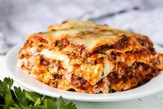

Description
Lasagna is a beloved Italian dish made of alternating layers of pasta sheets, cheese, meat or vegetables, and a rich tomato sauce, all baked to perfection. Its origins trace back to ancient Greece, but it has been embraced and modified by various cultures over time. The dish's hearty layers and comforting flavors have made it a staple in family gatherings and celebrations worldwide.
Ingredients
- Lasagna noodles
- Ground beef or pork (or a mixture of both)
- Ricotta cheese
- Mozzarella cheese
- Parmesan cheese
- Eggs
- Garlic
- Onion
- Tomato sauce (or crushed tomatoes)
- Olive oil
- Salt
- Black pepper
- Fresh basil
- Oregano
- Red pepper flakes (optional)
Steps
- Preheat oven to 375°F (190°C).
- Sauté garlic and onion in olive oil.
- Add ground beef/sausage; cook until browned.
- Stir in tomato sauce, salt, pepper, and oregano; simmer.
- In a bowl, mix ricotta, mozzarella, Parmesan, eggs, and basil.
- Layer: Start with sauce, then pasta sheets, ricotta mix, and repeat.
- Finish with sauce and sprinkle mozzarella on top.
- Finish with sauce and sprinkle mozzarella on top.
- Uncover and bake 20-25 minutes more until bubbly.
- Let sit 10 minutes before serving.